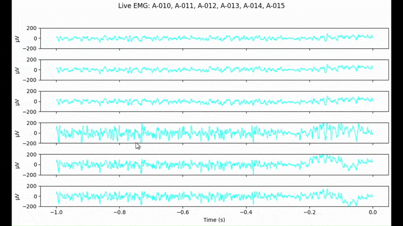

Live Plotting of Multiple EMG Channels
This example demonstrates how to visualize live EMG data from multiple channels using the RHX device and Matplotlib’s animation features.
{kind=link}
Requirements:
Intan RHX Controller with TCP servers enabled (Remote Control)
matplotlib (with Qt5Agg backend; pip install matplotlib pyqt5)
A running RHX TCP server
You’ll see how to: - Connect to the RHX device over TCP - Stream EMG data from selected channels in real time - Display a scrolling plot for each channel in a shared window
Example code:
"""
Example: Live plotting of multiple EMG channels from an Intan RHX device.
Streams channels 10-15 and displays them in real time.
"""
import time
import numpy as np
import matplotlib
matplotlib.use("Qt5Agg") # Use fast, responsive backend
import matplotlib.pyplot as plt
import matplotlib.animation as animation
from intan.rhx_interface import IntanRHXDevice
# === Configuration ===
CHANNELS = [10, 11, 12, 13, 14, 15]
SAMPLING_RATE = 4000
WINDOW_SEC = 1.0
PLOT_UPDATE_HZ = 5 # Refresh every 200 ms
SAMPLES_PER_WINDOW = int(SAMPLING_RATE * WINDOW_SEC)
PLOT_INTERVAL_SEC = 1 / PLOT_UPDATE_HZ
x_data = np.linspace(-WINDOW_SEC, 0, SAMPLES_PER_WINDOW)
# === Initialize RHX Device ===
device = IntanRHXDevice()
if not device.connected:
raise RuntimeError("Could not connect to RHX TCP server. Make sure it's running.")
device.configure(channels=CHANNELS, blocks_per_write=1, enable_wide=True)
# === Setup Plotting ===
fig, axs = plt.subplots(len(CHANNELS), 1, figsize=(10, 6), sharex=True)
axs = np.atleast_1d(axs)
lines = {}
buffers = {}
for ax, ch in zip(axs, CHANNELS):
ax.set_ylabel("µV")
ax.set_ylim(-200, 200)
ax.grid(False)
ax.set_title("")
ax.legend().set_visible(False)
line, = ax.plot(x_data, np.zeros(SAMPLES_PER_WINDOW), label=f"A-{ch:03d}", color="cyan", linewidth=1)
lines[ch] = line
buffers[ch] = np.zeros(SAMPLES_PER_WINDOW)
axs[-1].set_xlabel("Time (s)")
fig.suptitle("Live EMG: " + ", ".join([f"A-{ch:03d}" for ch in CHANNELS]))
fig.tight_layout(rect=[0, 0, 1, 0.96])
# === Update Function ===
def update_plot(_):
n_frames = int(SAMPLING_RATE * PLOT_INTERVAL_SEC)
start_time = time.time()
try:
_, channel_array = device.stream(n_frames=n_frames)
except Exception as e:
print(f"[Stream Error] {e}")
return lines.values()
elapsed = time.time() - start_time
for i, ch in enumerate(CHANNELS):
new_data = channel_array[i]
num_new = min(len(new_data), SAMPLES_PER_WINDOW)
buffers[ch] = np.roll(buffers[ch], -num_new)
buffers[ch][-num_new:] = new_data[-num_new:]
lines[ch].set_ydata(buffers[ch])
rate = channel_array.shape[1] / elapsed if elapsed > 0 else 0
print(f"{channel_array.shape[1]} samples/ch in {elapsed:.3f} s → {rate:.1f} Hz")
return lines.values()
# === Animation Loop ===
ani = animation.FuncAnimation(
fig, update_plot,
interval=int(PLOT_INTERVAL_SEC * 1000),
blit=True
)
try:
print(f"Streaming Channels: {', '.join([f'A-{ch:03d}' for ch in CHANNELS])}")
plt.show()
except KeyboardInterrupt:
print("Interrupted.")
finally:
device.close()
print("RHX device connection closed.")
Expected outcome:
Real-time, continuously updating plots for each selected channel
All channels appear in a single window stacked vertically
Streaming rate is printed in the terminal
Tips: - You can adjust the CHANNELS list to select different channels. - For a more responsive UI or to support additional features, see the PyQtGraph-based example in the next tutorial.
Troubleshooting: - Make sure the Intan RHX TCP server is running and channels are enabled for streaming. - If you see “Could not connect to RHX TCP server”, open the Remote Control GUI in RHX and enable both servers. - Install PyQt5 if you see backend errors: pip install pyqt5